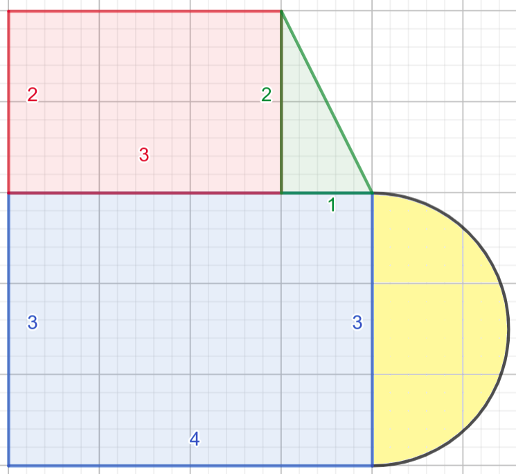

10.2. Дефинисање функција¶
Видели смо колико је корисно када на располагању имамо дате функције
попут min, max или abs. Сви програмски језици, па и Python
допуштају корисницима да дефинишу своје функције.
У програмима са корњача-графиком смо се срели са дефинисањем процедура, што нам је омогућило да проширимо језик који корњача разуме и да лакше пишемо програме. Једном када се дефинише процедура, практично нема разлике између њеног коришћења и коришћења неке од уграђених наредби, тако да су нам процедуре заправо дале начин да дефинишемо нове, сложеније наредбе корњачи. Функције су веома сличне процедурама, са главном разликом да функције служе да на основу улазних вредности израчунају неки резултат и врате га, док процедуре служе да промене стање програма и обично не враћају никакав резултат. На пример, abs је функција која на основу дате вредности броја одређује његову апсолутну вредност, док је kvadrat(a) процедура која не враћа никакву вредност већ наређује корњачи да нацрта квадрат на екрану. input, коју смо користили за учитавање са тастатуре је функција (јер враћа унету вредност), док је print процедура (јер не враћа никакву вредност, већ мења стање програма тј. оно што је исписано на екрану).
Јасна подела на процедуре и функције уведена је у програмском
језику Pascal. У Python-у се за обе врсте потпрограма користи иста
кључна реч def, па се стога често не прави разлика између ова
два облика потпрограма, већ се говори о функцијама које враћају и
функцију које не враћају вредности.
Примери дефинисања функција¶
На пример, функција која израчунава обим правоугаоника се може дефинисати и онда употребити на следећи начин.
Дефиниција функције почиње речју def након тога се наводи назив
функције, затим у заградама наведени улазни параметри функције и
симбол двотачка (:). Након те прве линије наводи се тело
функције, које мора бити мало увучено. Код најједноставнијих функција
(као што су ове две наведене у примерима) тело функције представља
само наредба return након које се налази израз који представља
везу између улазних параметара и резултата функције. Код
компликованијих функција у телу се налазе дужа израчунавања, али се и
даље у телу функције (најчешћње на самом крају) налази наредба
return иза које се наводи вредност функције (то може бити и име
променљиве у којој је израчуната резултујућа вредност). Функције се
позивају тако што се наведе њихов назив и у загради вредности
аргумената.

Површина сложених облика¶
Размотримо проблем израчунавања површине наредних сложених облика.
{kind=link}

Први облик се може разложити на два правоугаоника, један правоугли троугао и један полукруг, док се површина другог облика може добити тако што се од површине највећег полукруга одузме површина најмањег, а дода површина средњег полукруга и површина правоуглог троугла.
Ако једном дефинишемо функције за израчунавање површине сваког од тих елементарних облика, веома једноставно у главном програму можемо израчунавати површине разних сложених облика, не размишљајући више о формулама потребним за израчучнавање површине појединачних облика (површина правоугаоника страница \(a\) и \(b\) израчунава се по формули \(P=a\cdot b\), површина правоуглог троугла чије су странице које образују прав угао \(a\) и \(b\) једнака је \(\frac{a\cdot b}{2}\), јер је тај троугао половина одговарајућег правоугаоника, а површина круга полупречника \(r\) може се израчунати по формули \(P = r^2\pi\), где је \(pi = 3,1415926...\), а у језику Python се може добити помоћу math.pi).
Функције са више резултата¶
У неким ситуацијама функција треба да врати више вредности. На пример, желимо да претварање центиметара у метре и центиметре опишемо у облику посебне функције. Резултат тада можемо вратити у облику пара или торке елемената (више речи о паровима и торкама је дато у поглављу о представљају података у програмима).
Секунде у сате, минуте и секунде¶
Напиши функцију која на основу броја секунди протеклих од претходне поноћи израчуна тренутно време у сатима, минутима и секундама, водећи рачуна да број сати буде између 0 и 23.
У наредној дефиницији функције направљено је неколико грешака. Исправи је тако да наредни програм да исправне резултате.
Када програм покренеш треба да испише 0 : 16 : 40 и 2 : 0 : 0.
Сврха дефинисања функција¶
Резимирајмо на крају неколико основних разлога за дефинисање функција.
Увођењем функција добијају се разумљивији програми (ономе ко чита главни програм много је јасније да се у неком делу израчунава обим правоугаоника ако у програму види израз
obim_pravougaonika(2, 5)него ако види израз2 * 2 + 2 * 5)). Када дефинишемо погодне функције, главни програм је било много лакше написати.Функције помажу да се програм скрати тако што се избегава понављање истог програмског кода (ако је тај програмски код дугачак и компликован, издвајање у функцију може значајно поједноставити и скратити програм). Ако се покаже да је тај део кода често потребно мењати (што је често случај у програмирању) то што се код јавља само једном (у склопу тела функције) чини одржавање много једноставнијим (не морамо измене да правимо на пуно места, већ само на једном).
Функције помажу и да се неки проблеми реше, тако што омогућавају разлагање комплексних проблема на једноставније потпроблеме.
Домаћи задатак¶
Уради за домаћи неколико наредних задатака.
Време чекања на станици¶
Јелена је дошла аутобусом на станицу у s1 сати и m1 минута, док је Иванин аутобус стигао у s2 сати и m2 минута. Колико је сати и минута она која је прва стигла чекала ону која је друга стигла?
И у овом задатку се тражи да се израчуна растојање између два временска тренутка за које се не зна који је први, а који други. Као што смо приказали раније, рачунање растојања се своди на рачунање апсолутне вредности разлике, а рад са сатима и минутима лакше обављамо ако прво претворимо све у минуте, затим израчунамо број минута колико су се чекале и након тога то претворимо у сате и минуте.
Месечне промене плате¶
Основна плата једног радника у првом месецу била је 48.375 динара. У наредном месецу је повећана за 10%, затим је у наредном месецу смањена за 5%, а затим је у наредном месецу опет повећана за 15%. Приликом сваке промене, плата је заокруживана на најближи цео број динара. Колико је износила плата тог радника у четвртом месецу?
Формулу за промену новчаног износа за одређени проценат смо већ раније разматрали. Ако се плата \(P\) увећава за \(p\%\) тада је нови износ једнак \(P \cdot (1 + \frac{p}{100})\). Након овога, потребно је додатно заокружити износ на најближи цео број коришћењем функције round. Пошто је формула компликована, уместо да је више пута користимо у програму, много је боље издвојити је у посебну функцију.
Допуни дефиницију те функције, и затим исправи аргументе у њеним позивима у складу са текстом задатка. Провери на крају да ли је резултат који добијеш тачан.
Плата у четвртом месецу је
Просек 3 броја¶
Димитрије, Ања, Ивона и Марко су високи редом 165, 162, 158 и 171 cm. Пријављују трочлану екипу за школски турнир у кошарци и у формулару је неопходно да наведу просечну висину своје екипе, али се још нису одлучили ко ће сачињавати екипу. Дефиниши функцију за израчунавање просека три броја, а затим испиши просечне висине за сваку од 4 могуће варијанте трочлане екипе.